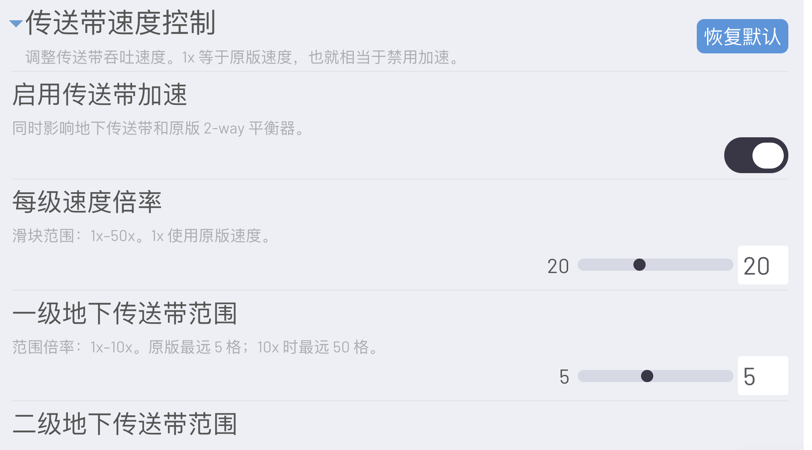

用途
用于快速验证大型物流网络。它只改变物流吞吐相关参数，默认倍率为 10×，也可以回到 1× 原版速度。
核心功能
- 每级普通传送带和地下传送带速度可设置为 1–50×。
- 原版二路平衡器的处理速度同步增加，避免成为高速带网络中的瓶颈。
- 传送带读取器改为即时透传，并解除读取器吞吐显示上限。
- 地下传送带三级、四级和连接距离由独立的
underground-belt-expansion.js负责。 - 传送带箭头、底纹动画和低缩放物品简化由独立的
belt-optimization.js负责。
使用方法
- 启用 Structured Mod Settings UI 后，进入「游戏模组（MODS）→ 传送带速度控制」。
- 设置 5× 或 10× 进行布局验证，再逐步提高倍率观察吞吐和逻辑负载。
- 需要地下传送带三级、四级或距离设置时，另外启用
underground-belt-expansion.js。
实机截图

兼容性与注意事项
该 Mod 调整物流吞吐；Belt Optimization 调整传送带绘制；Factory Stress Lab 调整整体模拟倍率。三者可以组合启用。